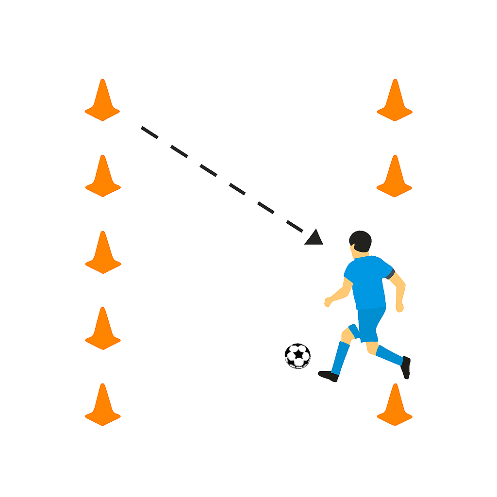
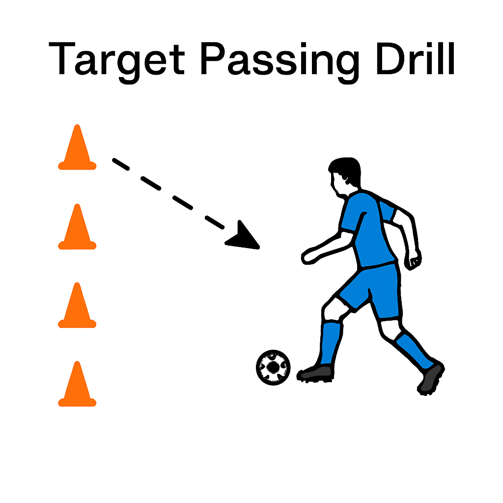

Description: This lesson introduces players to essential ball control skills. Through progressive exercises—warm-ups, dribbling under pressure, and controlled passing—players will build confidence, improve first touch, and enhance their ability to retain possession in game-like scenarios.
Brief: Light touches and movement to get comfortable with the ball.
Key Points:
Explanation: \Players form a circle, each with a ball. On your signal, use only the inside of your foot to tap the ball around the circle. After 30 seconds, switch to the outside of the foot, then to rolling the sole of your foot over the ball. Emphasize soft touches and body positioning.
Image: 
Resources: cones, one ball per player
Brief: Maintain close control while evading a passive defender.
Key Points:
Explanation: In pairs, one defender and one dribbler in a 10×10 yard grid. The dribbler’s goal is to keep the ball away from the defender for 30 seconds using shields, quick touches, and sudden changes of direction. Swap roles. Focus on low center of gravity and checking over the shoulder.
Image: 
Resources: cones, training bibs, one ball per pair
Brief: Control a pass and play it accurately in one movement.
Key Points:
Explanation: Set up two lines 15 yards apart. Player A passes to Player B’s first touch, then B returns the ball to A in one go. After 10 reps, move one line 5 yards further apart. Emphasize body shape—open stance—and cushioning the pass to direct the ball into the desired space.
Image:
Resources: cones, two balls per pair